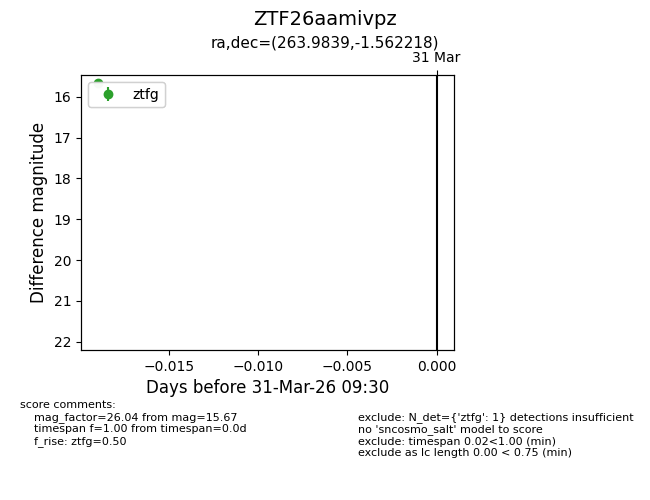
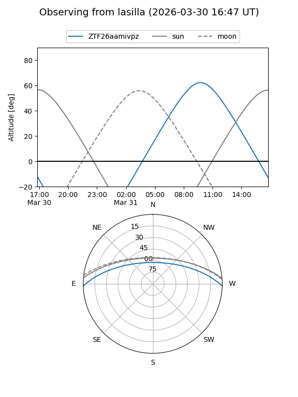
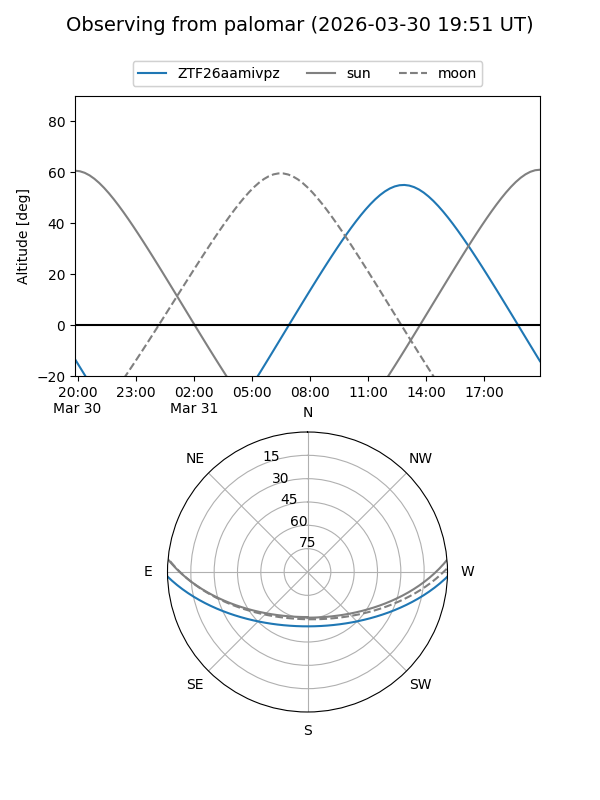

ZTF26aamivpz
Target ZTF26aamivpz at 2026-03-31 09:33
Aliases and brokers:
FINK: link
Lasair: link
ALeRCE: link
alt names
ZTF26aamivpz (ztf,fink_ztf)
Coordinates:
equatorial (ra, dec) = 263.9839,-1.56222
equatorial (HMS+DMS) = 17:35:56.14,-01:33:43.99
galactic (l, b) = (22.6418,+15.98499)
Flags:
Photometry:
last ztfg=15.67
1 ztfg detections
Lightcurve

Visibility


Additional plots